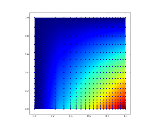

This post is about interpolation on a N-dimensional regular grid that is distorted. With distorted I mean that dx, dy, dz can vary. The following code works very well:
#!/usr/bin/env python
import numpy as np
import matplotlib.pyplot as plt
from scipy.ndimage import map_coordinates
nx_irreg, ny_irreg = 20,30
nx_reg, ny_reg = 500,500
#create irregular sampling points and data
xgrid = np.sqrt(np.linspace(0.,1.,nx_irreg))
ygrid = np.linspace(0.,1.,nx_irreg)**2
zgrid_irreg = np.outer(xgrid,ygrid)
#create regular sampling points
xcoords = np.linspace(0.,1.,nx_reg)
ycoords = np.linspace(0.,1.,ny_reg)
#get array index coordinates
ixcoords = np.interp(xcoords, xgrid, np.arange(len(xgrid)))
iycoords = np.interp(ycoords, ygrid, np.arange(len(ygrid)))
#create 2d grid and interpolate
ix,iy = np.meshgrid(ixcoords,iycoords)
points2d = np.vstack( (ix.flatten(),iy.flatten()) )
zgrid_reg = map_coordinates(zgrid_irreg, points2d, cval=np.NaN).reshape(ny_reg,nx_reg)
#plotting
fig = plt.figure()
plt.imshow(zgrid_reg,extent=(0.,1.,0.,1.))
xp, yp = np.meshgrid(xgrid,ygrid)
plt.scatter(xp.flatten(),yp.flatten())
plt.show()